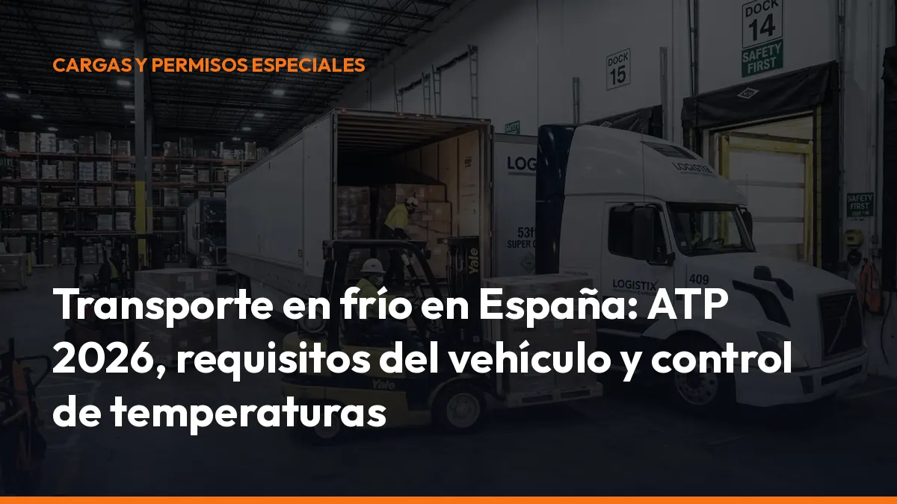

Transporte en frío en España: ATP 2026, requisitos del vehículo y control de temperaturas

Desde el 25 de agosto de 2026, el nuevo ATP 2026 está en vigor en España. La actualización afecta especialmente a la documentación técnica, los registradores de temperatura y los vehículos multitemperatura.
La buena noticia: no existe una obligación general de renovar toda la flota. La clave está en revisar lo que ya tienes, corregir posibles fallos y llevar la documentación en regla durante cada ruta.
ATP 2026: el cambio ya está en vigor
El Acuerdo ATP regula el transporte internacional de mercancías perecederas y establece las condiciones técnicas de los vehículos especiales utilizados para transportar productos a temperatura controlada.
En España, su aplicación se complementa con el Real Decreto 237/2000, que fija las especificaciones técnicas y los procedimientos de control para vehículos isotermos, refrigerantes, frigoríficos y caloríficos.
El nuevo ATP 2026 entró en vigor el 25 de agosto de 2026. Desde esa fecha debes prestar especial atención a:
- Documentación técnica: conserva certificados, fichas, actas y registros actualizados.
- Registradores de temperatura: comprueba su conformidad y la documentación de verificación.
- Vehículos multitemperatura: revisa la certificación de cada compartimento y su configuración.
- Equipos frigoríficos: cualquier modificación o sustitución puede afectar a la conformidad ATP.
- Placas y marcas: verifica que la identificación del vehículo sea visible, fija e indeleble.
¿Debes renovar toda la flota?
No. El ATP 2026 no obliga a sustituir de forma general los vehículos o registradores que ya están en servicio y son conformes.
Los registradores que cumplen la norma EN 12830:1999 pueden seguir utilizándose. Además, las nuevas exigencias de verificación y documentación disponen de un periodo transitorio de 12 meses, hasta el 25 de agosto de 2027.
Ahora bien, no esperes al último momento. Solicita a tu proveedor o servicio técnico una revisión por escrito y archiva el resultado. Así evitarás dudas durante una inspección.
Qué requisitos debe cumplir un vehículo frigorífico
Un vehículo frigorífico debe conservar la temperatura exigida durante toda la operación. Para ello, debe disponer de una caja correctamente aislada y de un equipo de frío con capacidad suficiente.
El ATP comprueba, entre otros aspectos:
- Aislamiento térmico: paredes, techo y suelo deben limitar la entrada de calor.
- Estanqueidad: puertas, juntas y cierres deben evitar pérdidas térmicas.
- Equipo frigorífico: la potencia debe ser adecuada para la temperatura de trabajo.
- Estado de conservación: golpes, reparaciones o modificaciones pueden afectar al aislamiento.
- Identificación: la clasificación y las marcas ATP deben corresponder con la configuración real.
- Control periódico: el vehículo debe superar las inspecciones iniciales, periódicas o excepcionales que correspondan.
El Ministerio de Industria establece que la certificación de conformidad debe ser emitida por un organismo de control acreditado para este ámbito.
Certificado ATP: qué es y qué debes llevar
El certificado ATP acredita que el vehículo cumple los requisitos técnicos necesarios para transportar mercancías perecederas a temperatura regulada.
Durante el transporte debes llevar a bordo el certificado de conformidad correspondiente, salvo que el vehículo disponga de una placa de certificación ATP válida que permita acreditar esa conformidad conforme a la normativa aplicable.
Comprueba siempre:
- Certificado vigente: revisa la fecha de validez antes de iniciar la ruta.
- Matrícula correcta: el documento debe corresponder al vehículo utilizado.
- Clasificación adecuada: verifica que coincide con el tipo de transporte y temperatura.
- Placa visible: la identificación debe estar fijada de forma permanente.
- Ficha técnica: conserva la ficha de características y las actas de inspección.
- Modificaciones documentadas: no cambies caja, tabiques o equipo de frío sin consultar previamente.
Las inspecciones periódicas en España siguen, con carácter general, un primer control a los 6 años desde la puesta en servicio y controles posteriores cada 3 años, sin perjuicio de las condiciones concretas aplicables a cada vehículo.
Cuando el recinto isotermo alcanza determinadas antigüedades, puede ser necesario realizar un ensayo de verificación del coeficiente global de transmisión térmica K. Por eso debes controlar la edad de la caja, no solo la antigüedad del camión.
Control de temperaturas: registra, conserva y demuestra
En el transporte frigorífico, mantener la temperatura es solo una parte de la obligación. También debes poder demostrar que se ha mantenido.
El registro puede realizarse mediante:
- Registrador de temperatura instalado en el vehículo.
- Sondas calibradas y correctamente ubicadas.
- Datalogger para operaciones concretas.
- Sistemas digitales con descarga y archivo de datos.
- Informes de temperatura asociados a cada porte.
En productos congelados y ultracongelados, el control adquiere una importancia especial. Los vehículos de determinadas clases, como FRB, FRC y FRF, deben contar con los dispositivos exigibles cuando transporten productos ultracongelados. No guardes únicamente el dato final. Conserva el registro completo desde la carga hasta la entrega y relaciónalo con:
- Matrícula del vehículo.
- Fecha y hora de inicio y final.
- Lugar de carga y descarga.
- Producto transportado.
- Temperatura objetivo.
- Incidencias o aperturas de puertas.
- Identificación del conductor.
- Firma o validación de la entrega.
Así podrás responder rápidamente ante una reclamación, una auditoría o un control en carretera.
Vehículos multitemperatura: revisa cada compartimento
Los vehículos multitemperatura permiten transportar productos con diferentes necesidades térmicas en una misma ruta. Por ejemplo, mercancía refrigerada en un compartimento y producto congelado en otro.
Esta solución aumenta la eficiencia, pero también exige mayor control.
El ATP 2026 desarrolla con más precisión la certificación de las unidades multicompartimento. Debes disponer de documentación que acredite:
- Configuración de los compartimentos.
- Tipo y espesor de los tabiques interiores.
- Temperatura asignada a cada zona.
- Capacidad frigorífica disponible.
- Cálculos y hojas normalizadas de conformidad.
- Medición y registro de temperatura por compartimento.
No basta con que el equipo funcione. Debes demostrar que cada zona mantiene su temperatura cuando el vehículo circula con la configuración homologada.
Si instalas un tabique, cambias un evaporador o sustituyes el refrigerante, consulta antes con el fabricante, el servicio técnico o el organismo de control. Una modificación aparentemente sencilla puede dejar la configuración fuera del certificado ATP.
La cadena de frío empieza antes de salir a carretera
La cadena de frío no depende únicamente del conductor. Empieza en la preparación de la mercancía y continúa hasta la recepción.
Para evitar roturas de temperatura:
1. Preenfría la caja antes de cargar. 2. Comprueba la temperatura del producto en el momento de la carga. 3. No sobrecargues el vehículo ni bloquees las salidas de aire. 4. Reduce el tiempo de apertura de puertas. 5. Separa los productos según sus rangos térmicos. 6. Comprueba el registrador antes de iniciar la ruta. 7. Anota cualquier incidencia durante el trayecto. 8. Solicita la validación de entrega con la temperatura registrada.
Cada paso evita pérdidas de mercancía, reclamaciones y problemas durante una inspección.
Documentación preparada para un control
Durante un control sanitario, de transportes o de industria, llevar los documentos ordenados marca la diferencia. No esperes a buscar la información cuando el agente ya está revisando el vehículo.
Checklist del transporte en frío
- Certificado ATP: vigente y correspondiente a la matrícula.
- Placa ATP: visible y en buen estado.
- Ficha de características: actualizada.
- Acta de inspección: disponible cuando proceda.
- Registro de temperaturas: completo y legible.
- Calibración de sondas: archivada y vigente.
- Documentación del porte: carta de porte, albarán o documento equivalente.
- Datos del producto: naturaleza y condiciones de conservación.
- Incidencias: registradas y justificadas.
- Configuración multitemperatura: documentación específica disponible.
Lleva una copia digital y otra accesible desde el móvil. Con Mi Carga puedes crear y consultar documentación de transporte directamente desde la cabina, sin depender de carpetas de papel.
Digitaliza tus documentos y responde al instante
La documentación en papel se pierde, se deteriora y complica las comprobaciones. En cambio, si centralizas los documentos en el móvil, puedes acceder a ellos en cualquier lugar y a cualquier hora.
Con Mi Carga puedes:
- Generar documentos de transporte al instante.
- Compartirlos directamente con clientes y conductores.
- Consultar la información desde el móvil.
- Mantener trazabilidad de cada porte.
- Trabajar sin conexión cuando estás en carretera.
- Reducir errores de escritura y duplicidades.
Activa tu cuenta con 10 portes de prueba, sin caducidad. Después puedes contratar el plan mensual por:
10 €/mes + IVA
O elegir el plan anual por:
90 €/año + IVA
Los dos planes incluyen portes ilimitados, modo sin conexión y trazabilidad ROTT. Empieza ahora, sin permanencia y sin costes ocultos.
Revisa tu flota antes del próximo control
El ATP 2026 ya está vigente. No necesitas renovar toda tu flota, pero sí debes comprobar que cada vehículo mantiene su conformidad y que toda la documentación está disponible.
1. Crea un listado de vehículos frigoríficos. 2. Anota la fecha de caducidad de cada certificado ATP. 3. Revisa registradores, sondas y calibraciones. 4. Comprueba las configuraciones multitemperatura. 5. Archiva certificados y registros de temperatura. 6. Digitaliza los documentos de cada porte. 7. Forma a tus conductores para responder durante un control.
La cadena de frío exige precisión. La documentación también.
Pásate a una gestión digital, genera tus documentos en segundos y mantén toda la información disponible durante la ruta. Si gestionas varios conductores, solicita un presupuesto cerrado. Si eres autónomo, activa tu plan directamente.
¿Necesitas ayuda? Escríbenos por WhatsApp al +34 744 716 449 y lo vemos contigo.
Fuentes y normativa
- Ministerio de Industria: reglamentación ATP
- Real Decreto 237/2000 en el BOE
- Texto actualizado del ATP 2026
- Información sobre la entrada en vigor del ATP 2026
Hazlo así:
DeCA, carta de porte y ADR, en PDF, con QR y archivo automático en la nube.
Empezar con 10 documentos gratisArtículo informativo. Consulta siempre el caso concreto de tu operación. ¿Dudas? Escríbenos.